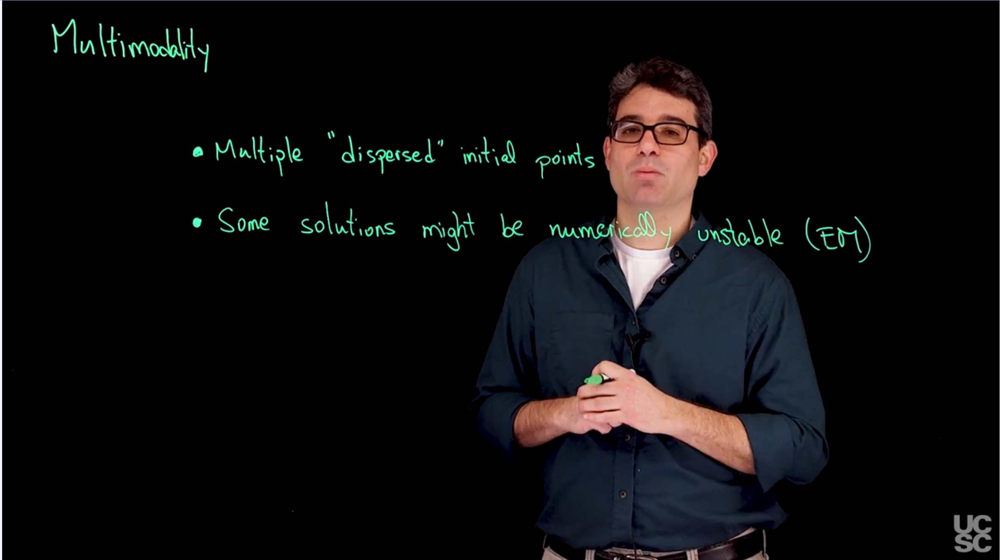
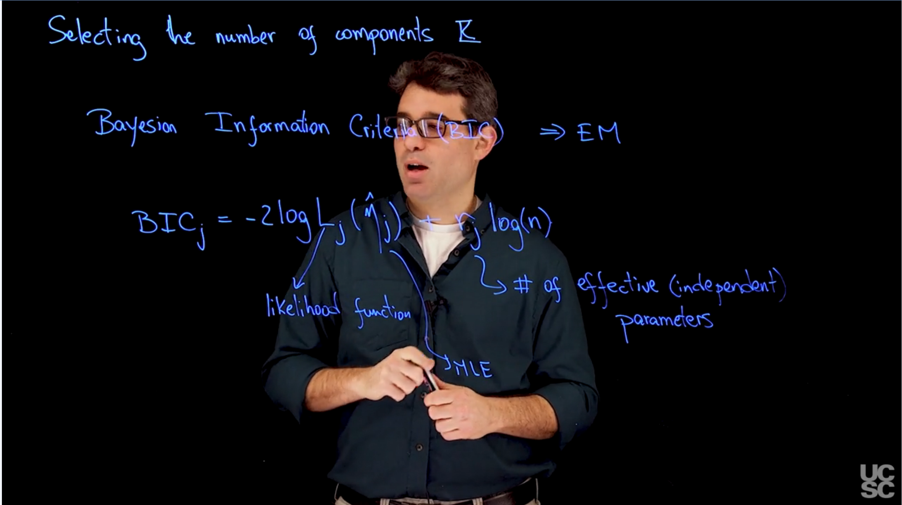

Mixture Models, Maximum Likelihood Estimation, BIC, Bayesian Information Criteria, Multimodality, Numerical Instability, notes
1 Practical Considerations of Mixture Models
1.1 Computational Considerations
### Numerical stability
The issue is in how the computer represents numbers. The computer uses a finite number of bits to represent numbers, which can lead to numerical instability when performing calculations that involve very large or very small numbers. This can result in loss of precision and incorrect results.
The solution is to use logarithmic transformations to avoid numerical instability. By taking the logarithm of the numbers, we can work with smaller and more manageable values, which reduces the risk of numerical instability.
1.1.1 Sample code to illustrate numerical stability issues
Code
## Consider a mixture of two normal distributions with equal weights (w1 = w2 = 1/2)## Component 1 has mean 0 and standard deviation 1## Component 2 has mean 1 and standard deviation 1## The observation is x = 50## What is Pr(c = 1 | x)?dnorm(50, 0, 1)
## What if x=3? Two ways to do the calculation## One way: Direct calculationz1 =dnorm(3, 0, 1)z2 =dnorm(3, 1, 1)z1/(z1+z2)
[1] 0.07585818
Code
## A second way: Compute in the logarithm scale, add b ## to all values, and then exponentiate before standardizinglz1 =dnorm(3, 0, 1, log=T)lz2 =dnorm(3, 1, 1, log=T)b =3exp(lz1+b)/(exp(lz1+b) +exp(lz2+b))
[1] 0.07585818
Code
## Going back to the case x - 50:## Wronglz1 =log(dnorm(50, 0, 1))lz2 =log(dnorm(50, 1, 1))b =max(lz1, lz2)exp(lz1-b)/(exp(lz1-b) +exp(lz2-b))
## Also right (just more cumbersome)lz1 =-0.5*log(2*pi) -0.5*50^2lz2 =-0.5*log(2*pi) -0.5*49^2b =max(lz1, lz2)exp(lz1-b)/(exp(lz1-b) +exp(lz2-b))
[1] 3.179971e-22
1.1.2 Computational issues associated with multimodality
### Sample code to illustrate multimodality issues 1

Code
## Illustrating the fact that the likelihood for a mixture model is multimodal### Loading data and setting up global variablesrm(list=ls())library(mclust)
Package 'mclust' version 6.1.1
Type 'citation("mclust")' for citing this R package in publications.
Code
library(mvtnorm)
Attaching package: 'mvtnorm'
The following object is masked from 'package:mclust':
dmvnorm
Code
### Defining a custom function to create pair plots### This is an alternative to the R function pairs() that allows for ### more flexibility. In particular, it allows us to use text to label ### the pointspairs2 =function(x, col="black", pch=16, labels=NULL, names =colnames(x)){ n =dim(x)[1] p =dim(x)[2]par(mfrow=c(p,p))for(k in1:p){for(l in1:p){if(k!=l){par(mar=c(3,3,1,1)+0.1)plot(x[,k], x[,l], type="n", xlab="", ylab="")if(is.null(labels)){points(x[,k], x[,l], pch=pch, col=col) }else{text(x[,k], x[,l], labels=labels, col=col) } }else{plot(seq(0,5), seq(0,5), type="n", xlab="", ylab="", axes=FALSE)text(2.5,2.5,names[k], cex=1.2) } } }}## Setup datadata(iris)x =as.matrix(iris[,-5])n =dim(x)[1]p =dim(x)[2] # Number of featuresKK =3epsilon =0.0000001par(mfrow=c(1,1))par(mar=c(4,4,1,1))colscale =c("black","blue","red")shortnam =c("s","c","g")# Initialize the parameters of the algorithmset.seed(63252)numruns =15v.sum =array(0, dim=c(numruns, n, KK))QQ.sum =rep(0, numruns)for(ss in1:numruns){ w =rep(1,KK)/KK #Assign equal weight to each component to start with#mu = as.matrix(aggregate(x, list(iris[,5]), mean)[,2:5]) # Initialize in the true values#Sigma = array(0, dim=c(KK,p,p)) #Initial variances are assumed to be the same#Sigma[1,,] = var(x[iris[,5]=="setosa",])#Sigma[2,,] = var(x[iris[,5]=="versicolor",])#Sigma[3,,] = var(x[iris[,5]=="virginica",]) mu =rmvnorm(KK, apply(x,2,mean), 3*var(x)) #Cluster centers randomly spread over the support of the data Sigma =array(0, dim=c(KK,p,p)) #Initial variances are assumed to be the same Sigma[1,,] =var(x) Sigma[2,,] =var(x) Sigma[3,,] =var(x) sw =FALSE QQ =-Inf QQ.out =NULL s =0while(!sw){## E step v =array(0, dim=c(n,KK))for(k in1:KK){ #Compute the log of the weights v[,k] =log(w[k]) +dmvnorm(x, mu[k,], Sigma[k,,], log=TRUE) }for(i in1:n){ v[i,] =exp(v[i,] -max(v[i,]))/sum(exp(v[i,] -max(v[i,]))) #Go from logs to actual weights in a numerically stable manner }## M step w =apply(v,2,mean) mu =matrix(0, nrow=KK, ncol=p)for(k in1:KK){for(i in1:n){ mu[k,] = mu[k,] + v[i,k]*x[i,] } mu[k,] = mu[k,]/sum(v[,k]) } Sigma =array(0,dim=c(KK, p, p))for(k in1:KK){for(i in1:n){ Sigma[k,,] = Sigma[k,,] + v[i,k]*(x[i,] - mu[k,])%*%t(x[i,] - mu[k,]) } Sigma[k,,] = Sigma[k,,]/sum(v[,k]) }##Check convergence QQn =0for(i in1:n){for(k in1:KK){ QQn = QQn + v[i,k]*(log(w[k]) +dmvnorm(x[i,],mu[k,],Sigma[k,,],log=TRUE)) } }if(abs(QQn-QQ)/abs(QQn)<epsilon){ sw=TRUE } QQ = QQn QQ.out =c(QQ.out, QQ) s = s +1 } v.sum[ss,,] = v QQ.sum[ss] = QQ.out[s]print(paste("ss =", ss))}
## Boxplot of final values of the Q function for all runs of the algorithmpar(mfrow=c(1,1))par(mar=c(4,4,1,1))boxplot(QQ.out, ylab="Q", xlab="Iterations",las=2)
Code
## Graphical representation of the best solution cc =apply(v.sum[which.max(QQ.sum),,], 1 ,which.max)colscale =c("black","blue","red")#pairs(x, col=colscale[cc], pch=cc)pairs2(x, col=colscale[cc], labels=cc)
Code
## Graphical representation of the worst solutioncc =apply(v.sum[which.min(QQ.sum),,], 1 ,which.max)colscale =c("black","blue","red")#pairs(x, col=colscale[cc], pch=cc)pairs2(x, col=colscale[cc], labels=cc)
1.1.3 Sample code to illustrate multimodality issues 2
This code fails to converge because the algorithm is stuck in a local maximum of the likelihood function. The problem is that one of the components is “numerically empty” (i.e., it has no data points assigned to it). This can happen when the initial values for the means are too far apart or when the data is not well-separated.
Code
## Illustrating that the EM might fail for numerical reasons if a component is “numerically empty”### Loading data and setting up global variablesrm(list=ls())library(mclust)library(mvtnorm)library(ellipse)
Attaching package: 'ellipse'
The following object is masked from 'package:graphics':
pairs
Code
## Setup datadata(iris)x =as.matrix(iris[,-5])n =dim(x)[1]p =dim(x)[2] # Number of featuresKK =3epsilon =0.00000001# Initialize the parameters of the algorithmw =rep(1,KK)/KK #Assign equal weight to each component to start withmu =matrix(0, KK, p) # Initialize in the true valuesmu[1,] =apply(x, 2, mean)mu[2,] =apply(x, 2, mean) +c(2.2, 2.2, 2.2, 2.2)mu[3,] =apply(x, 2, mean) +c(-2.2, -2.2, -2.2, -2.2)Sigma =array(0, dim=c(KK,p,p)) #Initial variances are assumed to be the sameSigma[1,,] =var(x)/3Sigma[2,,] =var(x)/3Sigma[3,,] =var(x)/3# Plot the data along with the estimates of the componentscolscale =c("black","blue","red")par(mfrow=c(p,p))for(k in1:p){for(l in1:p){if(k!=l){par(mar=c(3,3,1,1)+0.1)plot(x[,k], x[,l], type="n", xlab="", ylab="", xlim=c(min(c(x[,k], mu[,k])),max(c(x[,k], mu[,k]))), ylim=c(min(c(x[,l], mu[,l])),max(c(x[,l], mu[,l]))))for(r in1:KK){lines(ellipse(x=Sigma[r,c(k,l),c(k,l)], centre=mu[r,c(k,l)], level=0.50), col="gold1", lty=1, lwd=1)lines(ellipse(x=Sigma[r,c(k,l),c(k,l)], centre=mu[r,c(k,l)], level=0.82), col="gold1", lty=1, lwd=1)lines(ellipse(x=Sigma[r,c(k,l),c(k,l)], centre=mu[r,c(k,l)], level=0.95), col="gold1", lty=1, lwd=1) }text(x[,k], x[,l], labels=as.numeric(iris[,5]), col=colscale[iris[,5]])points(mu[,k], mu[,l], pch=19, col="gold1", cex=2) }else{plot(seq(0,5), seq(0,5), type="n", xlab="", ylab="", axes=FALSE)text(2.5,2.5,colnames(x)[k], cex=1.5) } }}
Code
## Run the EM algorithm. It will fail in the first iterationsw =FALSEQQ =-InfQQ.out =NULLs =0while(!sw){## E step v =array(0, dim=c(n,KK))for(k in1:KK){ #Compute the log of the weights v[,k] =log(w[k]) +dmvnorm(x, mu[k,], Sigma[k,,], log=TRUE) }for(i in1:n){ v[i,] =exp(v[i,] -max(v[i,]))/sum(exp(v[i,] -max(v[i,]))) #Go from logs to actual weights in a numerically stable manner }## M step w =apply(v,2,mean) mu =matrix(0, nrow=KK, ncol=p)for(k in1:KK){for(i in1:n){ mu[k,] = mu[k,] + v[i,k]*x[i,] } mu[k,] = mu[k,]/sum(v[,k]) } Sigma =array(0,dim=c(KK, p, p))for(k in1:KK){for(i in1:n){ Sigma[k,,] = Sigma[k,,] + v[i,k]*(x[i,] - mu[k,])%*%t(x[i,] - mu[k,]) } Sigma[k,,] = Sigma[k,,]/sum(v[,k]) }##Check convergence QQn =0for(i in1:n){for(k in1:KK){ QQn = QQn + v[i,k]*(log(w[k]) +dmvnorm(x[i,],mu[k,],Sigma[k,,],log=TRUE)) } }if(abs(QQn-QQ)/abs(QQn)<epsilon){ sw=TRUE } QQ = QQn QQ.out =c(QQ.out, QQ) s = s +1}
Error in if (abs(QQn - QQ)/abs(QQn) < epsilon) {: missing value where TRUE/FALSE needed
Code
QQn
[1] NaN
1.1.4 Computational considerations for Mixture Models
1.2 Determining the number of components
So far we considered the number of components in the mixture model as a known and fixed parameter. However, in practice, the number of components is often unknown and needs to be estimated from the data. We will cover two approaches to estimate the number of components in a mixture model:
Bayesian Information Criteria (BIC): A model selection criterion that penalizes the likelihood of the model based on the number of parameters.
Bayesian approach: A probabilistic approach that estimates the number of components based on the posterior distribution of the model parameters.
1.2.1 Bayesian Information Criteria (BIC)
We can consider the choice of the number of components in a mixture model as a model selection problem. In this context, we have a collection of J models, each with a different number of components. The goal is to select the model that best fits with the evidence/data while avoiding overfitting.

A common approach to model selection that is useful for mixture models is the Bayesian Information Criteria (BIC). Given a collection of J models to be compared, the BIC for model j is given by the formula:
BIC_k = - 2\log L_j(\hat{\eta}) - r_k \log (n) \qquad
\tag{1}
where L_j is the likelihood of the model, \hat{\eta} is the maximum likelihood estimate of the parameters, r_j is the number of effective (independent) parameters in model j, and n is the number of observations. The model with the lowest BIC value is considered the best model.
We can interpret the first term in Equation 1 as a measure of the goodness of fit of the model, while the second term penalizes the model for its complexity. The BIC is a trade-off between the goodness of fit and the complexity of the model.
In the case of mixture models, j corresponds to the number of components K in the model. and \eta_k corresponds to the parameters of the model, which include the weights and parameters of the of the component distributions i.e. \eta_k = (w_1,\ldots,w_k, \theta_1, \ldots \theta_K) . The number of effective parameters in a mixture model with K components is given by:
L_k(\hat{w}_1,...\hat{w}_K, \hat{\theta}_1,...,\hat{\theta_K}) = \prod_{i=1}^n \sum_{k=1}^K \hat{w}_k g(x_i|\hat{\theta}_k)
furthermore, the number of effective parameters is given by:
r_k = K - 1 + \sum_{k=1}^K \dim(\theta_k)
1.2.2 HW Bayesian Information Criteria (BIC)
1.2.3 Bayesian Information Criteria Example
1.2.4 Sample code: Bayesian Information Criteria
Code
## Illustrating the use of BIC to estimate the number of components of a Mixture Model## using the galaxies datasetrm(list=ls())### Loading data and setting up global variableslibrary(MASS)data(galaxies)x = galaxiesn =length(x)set.seed(781209)KKmax =20BIC =rep(0, KKmax-1)w.sum =vector("list", KKmax-1)mu.sum =vector("list", KKmax-1)sigma.sum =rep(0, KKmax-1)for(KK in2:KKmax){### First, compute the "Maximum Likelihood" density estimate ### associated with a location mixture of 6 Gaussian distributions ### using the EM algorithm## Initialize the parameters w =rep(1,KK)/KK mu =rnorm(KK, mean(x), sd(x)) sigma =sd(x)/KK epsilon =0.000001 s =0 sw =FALSE KL =-Inf KL.out =NULLwhile(!sw){## E step v =array(0, dim=c(n,KK))for(k in1:KK){ v[,k] =log(w[k]) +dnorm(x, mu[k], sigma,log=TRUE) }for(i in1:n){ v[i,] =exp(v[i,] -max(v[i,]))/sum(exp(v[i,] -max(v[i,]))) }## M step# Weights w =apply(v,2,mean) mu =rep(0, KK)for(k in1:KK){for(i in1:n){ mu[k] = mu[k] + v[i,k]*x[i] } mu[k] = mu[k]/sum(v[,k]) }# Standard deviations sigma =0for(i in1:n){for(k in1:KK){ sigma = sigma + v[i,k]*(x[i] - mu[k])^2 } } sigma =sqrt(sigma/sum(v))##Check convergence KLn =0for(i in1:n){for(k in1:KK){ KLn = KLn + v[i,k]*(log(w[k]) +dnorm(x[i], mu[k], sigma, log=TRUE)) } }if(abs(KLn-KL)/abs(KLn)<epsilon){ sw=TRUE } KL = KLn KL.out =c(KL.out, KL) s = s +1if(s/20==floor(s/20)){ print(paste(s, KLn)) } } w.sum[[KK-1]] = w mu.sum[[KK-1]] = mu sigma.sum[KK-1] = sigma## Computing BICfor(i in1:n){ BIC[KK-1] = BIC[KK-1] -2*log(sum(w*dnorm(x[i], mu, sigma))) } BIC[KK-1] = BIC[KK-1] + ((KK-1) +1+ KK)*log(n) ### KK-1 independent weights, one variance, and KK means}
## What happens with the variance (bandwidth) as K increasespar(mar=c(4,4,1,1) +0.1)plot(seq(2,KKmax), sigma.sum, type="l", xlab="K", ylab=expression(hat(sigma)), lwd=2)abline(v=6, lty=3)
1.2.5 Estimating the number of components in Bayesian settings
The BIC has the term Bayesian in its name, but it is not a Bayesian method. It is a frequentist method that uses the likelihood of the model and the number of parameters to estimate the number of components. In contrast, Bayesian methods use the posterior distribution of the model parameters to estimate the number of components.
So what we want is to have a posterior estimate of the number of components. We can do this by using a Dirichlet process prior on the weights of the mixture model. The Dirichlet process is a nonparametric prior that allows for an infinite number of components, but only a finite number of them will be used in the posterior distribution.
1.2.6 Bayesian Information Criteria (BIC) for Mixture Models
- K= maximum number of components - K* = number of components that really generated the model
K<<K*$
so far we used
\tilde{w} \sim Dir(1, \ldots ,1) = U(0,1)
\tag{2}
but this won’t work because the number of weights in the prior increases with K and has increasing influence on the posterior. We need to use a prior that reduces the influence on the posterior as K increase like:
\tilde{w} \sim Dir(\alpha/K, \ldots, \alpha/K)
\tag{3}
where \alpha is a hyperparameter that controls the strength of the prior. The larger the value of \alpha, the more influence the prior has on the posterior distribution.
if (w_1,…,w_K)∼Dir(α/K,…,α/K), then the expected number of occupied components is given by:
leaving us with just a single parameter \alpha to tune. This is a very useful result because it allows us to estimate the number of components in a mixture model without having to specify the number of components in advance.
1.2.7 HW - Estimating the number of components in Bayesian settings
Exercise 1 Let K^* be the prior expected number of occupied components in a mixture model with K components where the weights are given a Dirichlet prior (w_1,…,w_K)∼Dir(2/K,…,2/K). If you have n=400 observations, what is the expected number of occupied components, E(K^*) according to the exact formula we discussed in the lecture? Round your answer to one decimal place.
Exercise 2 To compute the expected number of occupied components, we can use the formula:
E(K^*) = \sum_{i=0}^n \frac{\alpha}{\alpha+i-1}
Thus, the expected number of occupied components is given by:
Code
E.Kstar =0for (i in1:400){ E.Kstar = E.Kstar +2/(2+i-1)}round(E.Kstar,1)
[1] 11.1
Exercise 3 Consider the same setup as the previous question, what is the expected number of occupied components, E(K^*) according to the exact formula we discussed in the lecture if n=100 instead? Round your answer to one decimal place.
Exercise 4
Code
E.Kstar =0for (i in1:100){ E.Kstar = E.Kstar +2/(2+i-1)}round(E.Kstar,1)
[1] 8.4
Exercise 5 What would be the answer to the previous question if you used the approximate formula instead of the exact formula? Remember to round your answer to one decimal place.
Exercise 7 If you have n=200 observations and a priori expect the mixture will have about 2 occupied components (i.e., E(K^*) \approx 2), what value of \alpha should you use for the prior (w_1,…,w_K)∼Dir(\alpha/K,…,\alpha/K)? Use the approximation E(K^*) \approx \alpha \log\left(\frac{n+\alpha-1}{\alpha}\right) to provide an answer, which should be rounded to two decimal places.
1.2.8 Sample code for estimating the number of components and the partition structure in Bayesian models
Code
## Full Bayesian estimation of a mixture model for density estimation in the galaxies datasetrm(list=ls())### Loading data and setting up global variableslibrary(MASS)library(MCMCpack)
Loading required package: coda
##
## Markov Chain Monte Carlo Package (MCMCpack)
## Copyright (C) 2003-2025 Andrew D. Martin, Kevin M. Quinn, and Jong Hee Park
##
## Support provided by the U.S. National Science Foundation
## (Grants SES-0350646 and SES-0350613)
##
Code
data(galaxies)x = galaxiesn =length(x)set.seed(781209)### Fitting a Bayesian mixture model with KK =30## In this formulation, it should be interpreted as the ## maximum number of components allowed## Finding the value of alpha consistent with 6 expected components a prioriff =function(alpha) alpha*log((82+alpha-1)/alpha) -6alph =uniroot(ff, c(0.01, 20))alph$root # 1.496393
[1] 1.496393
Code
## Priors set up using an "empirical Bayes" approachaa =rep(1.5/KK,KK) # We approximate 1.496393 by 1.5eta =mean(x) tau =sqrt(var(x))dd =2qq =var(x)/KK## Initialize the parametersw =rep(1,KK)/KKmu =rnorm(KK, mean(x), sd(x))sigma =sd(x)/KKcc =sample(1:KK, n, replace=T, prob=w)## Number of iterations of the samplerrrr =25000burn =5000## Storing the samplescc.out =array(0, dim=c(rrr, n))w.out =array(0, dim=c(rrr, KK))mu.out =array(0, dim=c(rrr, KK))sigma.out =array(0, dim=c(rrr, KK))logpost =rep(0, rrr)for(s in1:rrr){# Sample the indicatorsfor(i in1:n){ v =rep(0,KK)for(k in1:KK){ v[k] =log(w[k]) +dnorm(x[i], mu[k], sigma, log=TRUE) #Compute the log of the weights } v =exp(v -max(v))/sum(exp(v -max(v))) cc[i] =sample(1:KK, 1, replace=TRUE, prob=v) }# Sample the weights w =as.vector(rdirichlet(1, aa +tabulate(cc, nbins=KK)))# Sample the meansfor(k in1:KK){ nk =sum(cc==k) xsumk =sum(x[cc==k]) tau2.hat =1/(nk/sigma^2+1/tau^2) mu.hat = tau2.hat*(xsumk/sigma^2+ eta/tau^2) mu[k] =rnorm(1, mu.hat, sqrt(tau2.hat)) }# Sample the variances dd.star = dd + n/2 qq.star = qq +sum((x - mu[cc])^2)/2 sigma =sqrt(1/rgamma(1, dd.star, qq.star))# Store samples cc.out[s,] = cc w.out[s,] = w mu.out[s,] = mu sigma.out[s] = sigmafor(i in1:n){ logpost[s] = logpost[s] +log(w[cc[i]]) +dnorm(x[i], mu[cc[i]], sigma, log=TRUE) } logpost[s] = logpost[s] +log(ddirichlet(w, aa))for(k in1:KK){ logpost[s] = logpost[s] +dnorm(mu[k], eta, tau, log=TRUE) } logpost[s] = logpost[s] +dgamma(1/sigma^2, dd, qq, log=TRUE) -4*log(sigma)if(s/500==floor(s/500)){print(paste("s =",s)) }}
## Plot Bayesian estimate with pointwise credible bands along with kernel density estimate and frequentist point estimate## Compute the samples of the density over a dense gridxx =seq(5000,37000,length=300)density.mcmc =array(0, dim=c(rrr-burn,length(xx)))for(s in1:(rrr-burn)){for(k in1:KK){ density.mcmc[s,] = density.mcmc[s,] + w.out[s+burn,k]*dnorm(xx,mu.out[s+burn,k],sigma.out[s+burn]) }}density.mcmc.m =apply(density.mcmc , 2, mean)yy =density(x)colscale =c("black", "red")density.mcmc.lq =apply(density.mcmc, 2, quantile, 0.025)density.mcmc.uq =apply(density.mcmc, 2, quantile, 0.975)par(mfrow=c(1,1))par(mar=c(4,4,1,1)+0.1)plot(xx, density.mcmc.m, type="n",ylim=c(0,max(density.mcmc.uq)),xlab="Velocity", ylab="Density")polygon(c(xx,rev(xx)), c(density.mcmc.lq, rev(density.mcmc.uq)), col="grey", border="grey")lines(xx, density.mcmc.m, col=colscale[1], lwd=2)lines(yy, col=colscale[2], lty=2, lwd=2)points(x, rep(0,n))legend(27000, 0.00017, c("MCMC","KDE"), col=colscale[c(1,2)], lty=c(1,2), lwd=2, bty="n")
Code
##### Finding optimal partition according to Binder's loss function#### Function that computes the loss at a particular configurationLstst =function(cch, DD, Dbar){ z =0for(i in1:(n-1)){for(j in (i+1):n){if(cch[i]==cch[j]){ z = z + (DD[i,j]-Dbar) } } }return(z)}## Initial value of the algorithm is the last iteration of the sampler## Using as.numeric(factor()) is a cheap way to force the cluster labels ## to be sequential starting at 1cch =as.numeric(factor(cc))## Setup parameters for the recursive alorithmDbar =0.50optLstst.old =-InfoptLstst.new =Lstst(cch, DD, Dbar=Dbar)maxiter =50niter =1while((optLstst.old!=optLstst.new)&(niter<=maxiter)){for(i in1:n){ nq =max(cch) +1 q =rep(0, nq)for(s in1:nq){ ccht = cch ccht[i] = s q[s] =Lstst(ccht, DD, Dbar=Dbar) } cch[i] =which.max(q) cch =as.numeric(factor(cch)) } optLstst.old = optLstst.new optLstst.new =Lstst(cch, DD, Dbar=Dbar) niter = niter+1}#print(nunique(cch))## Create another heatmap plot of the co-clustering matrix in which the ## optimal clusters are represented.cchlo =as.numeric(as.character(factor(cch, labels=order(unique(cch)))))cchlotab =table(cchlo)llc =cumsum(cchlotab[-length(cchlotab)])heatmapplot(DD, seq(1,n), seq(1,n,by=3), llc=llc)
Code
#dev.print(file="galaxiesheatmap50.pdf", dev=pdf)
1.2.9 Estimating the partition structure in Bayesian models
1.3 Advanced BIC
1.3.1 Honors Peer-graded Assignment: BIC for zero-inflated mixtures
Source Code
---title : 'Practical Considerations'subtitle : 'Bayesian Statistics: Mixture Models'categories: - Bayesian Statisticskeywords: - Mixture Models - Maximum Likelihood Estimation - BIC - Bayesian Information Criteria - Multimodality - Numerical Instability - notes---# Practical Considerations of Mixture Models## Computational Considerations{.column-margin width="200px"}### Numerical stabilityThe issue is in how the computer represents numbers. The computer uses a finite number of bits to represent numbers, which can lead to numerical instability when performing calculations that involve very large or very small numbers. This can result in loss of precision and incorrect results. The solution is to use logarithmic transformations to avoid numerical instability. By taking the logarithm of the numbers, we can work with smaller and more manageable values, which reduces the risk of numerical instability.### Sample code to illustrate numerical stability issues```{r}#| label: lst-numeric-stability-sample-code## Consider a mixture of two normal distributions with equal weights (w1 = w2 = 1/2)## Component 1 has mean 0 and standard deviation 1## Component 2 has mean 1 and standard deviation 1## The observation is x = 50## What is Pr(c = 1 | x)?dnorm(50, 0, 1)dnorm(50, 1, 1)dnorm(50, 0, 1)/(dnorm(50, 0, 1) +dnorm(50, 1, 1))## What if x=3? Two ways to do the calculation## One way: Direct calculationz1 =dnorm(3, 0, 1)z2 =dnorm(3, 1, 1)z1/(z1+z2)## A second way: Compute in the logarithm scale, add b ## to all values, and then exponentiate before standardizinglz1 =dnorm(3, 0, 1, log=T)lz2 =dnorm(3, 1, 1, log=T)b =3exp(lz1+b)/(exp(lz1+b) +exp(lz2+b))## Going back to the case x - 50:## Wronglz1 =log(dnorm(50, 0, 1))lz2 =log(dnorm(50, 1, 1))b =max(lz1, lz2)exp(lz1-b)/(exp(lz1-b) +exp(lz2-b))## Wronglz1 =log(exp(-0.5*50^2)/sqrt(2*pi))lz2 =log(exp(-0.5*49^2)/sqrt(2*pi))b =max(lz1, lz2)exp(lz1-b)/(exp(lz1-b) +exp(lz2-b))## Rightlz1 =dnorm(50, 0, 1, log=TRUE)lz2 =dnorm(50, 1, 1, log=TRUE)b =max(lz1, lz2)exp(lz1-b)/(exp(lz1-b) +exp(lz2-b))## Also right (just more cumbersome)lz1 =-0.5*log(2*pi) -0.5*50^2lz2 =-0.5*log(2*pi) -0.5*49^2b =max(lz1, lz2)exp(lz1-b)/(exp(lz1-b) +exp(lz2-b))```### Computational issues associated with multimodality{.column-margin width="200px"}### Sample code to illustrate multimodality issues 1```{r}#| label: lst-multimodality-sample-code-1## Illustrating the fact that the likelihood for a mixture model is multimodal### Loading data and setting up global variablesrm(list=ls())library(mclust)library(mvtnorm)### Defining a custom function to create pair plots### This is an alternative to the R function pairs() that allows for ### more flexibility. In particular, it allows us to use text to label ### the pointspairs2 =function(x, col="black", pch=16, labels=NULL, names =colnames(x)){ n =dim(x)[1] p =dim(x)[2]par(mfrow=c(p,p))for(k in1:p){for(l in1:p){if(k!=l){par(mar=c(3,3,1,1)+0.1)plot(x[,k], x[,l], type="n", xlab="", ylab="")if(is.null(labels)){points(x[,k], x[,l], pch=pch, col=col) }else{text(x[,k], x[,l], labels=labels, col=col) } }else{plot(seq(0,5), seq(0,5), type="n", xlab="", ylab="", axes=FALSE)text(2.5,2.5,names[k], cex=1.2) } } }}## Setup datadata(iris)x =as.matrix(iris[,-5])n =dim(x)[1]p =dim(x)[2] # Number of featuresKK =3epsilon =0.0000001par(mfrow=c(1,1))par(mar=c(4,4,1,1))colscale =c("black","blue","red")shortnam =c("s","c","g")# Initialize the parameters of the algorithmset.seed(63252)numruns =15v.sum =array(0, dim=c(numruns, n, KK))QQ.sum =rep(0, numruns)for(ss in1:numruns){ w =rep(1,KK)/KK #Assign equal weight to each component to start with#mu = as.matrix(aggregate(x, list(iris[,5]), mean)[,2:5]) # Initialize in the true values#Sigma = array(0, dim=c(KK,p,p)) #Initial variances are assumed to be the same#Sigma[1,,] = var(x[iris[,5]=="setosa",])#Sigma[2,,] = var(x[iris[,5]=="versicolor",])#Sigma[3,,] = var(x[iris[,5]=="virginica",]) mu =rmvnorm(KK, apply(x,2,mean), 3*var(x)) #Cluster centers randomly spread over the support of the data Sigma =array(0, dim=c(KK,p,p)) #Initial variances are assumed to be the same Sigma[1,,] =var(x) Sigma[2,,] =var(x) Sigma[3,,] =var(x) sw =FALSE QQ =-Inf QQ.out =NULL s =0while(!sw){## E step v =array(0, dim=c(n,KK))for(k in1:KK){ #Compute the log of the weights v[,k] =log(w[k]) +dmvnorm(x, mu[k,], Sigma[k,,], log=TRUE) }for(i in1:n){ v[i,] =exp(v[i,] -max(v[i,]))/sum(exp(v[i,] -max(v[i,]))) #Go from logs to actual weights in a numerically stable manner }## M step w =apply(v,2,mean) mu =matrix(0, nrow=KK, ncol=p)for(k in1:KK){for(i in1:n){ mu[k,] = mu[k,] + v[i,k]*x[i,] } mu[k,] = mu[k,]/sum(v[,k]) } Sigma =array(0,dim=c(KK, p, p))for(k in1:KK){for(i in1:n){ Sigma[k,,] = Sigma[k,,] + v[i,k]*(x[i,] - mu[k,])%*%t(x[i,] - mu[k,]) } Sigma[k,,] = Sigma[k,,]/sum(v[,k]) }##Check convergence QQn =0for(i in1:n){for(k in1:KK){ QQn = QQn + v[i,k]*(log(w[k]) +dmvnorm(x[i,],mu[k,],Sigma[k,,],log=TRUE)) } }if(abs(QQn-QQ)/abs(QQn)<epsilon){ sw=TRUE } QQ = QQn QQ.out =c(QQ.out, QQ) s = s +1 } v.sum[ss,,] = v QQ.sum[ss] = QQ.out[s]print(paste("ss =", ss))}## Boxplot of final values of the Q function for all runs of the algorithmpar(mfrow=c(1,1))par(mar=c(4,4,1,1))boxplot(QQ.out, ylab="Q", xlab="Iterations",las=2)## Graphical representation of the best solution cc =apply(v.sum[which.max(QQ.sum),,], 1 ,which.max)colscale =c("black","blue","red")#pairs(x, col=colscale[cc], pch=cc)pairs2(x, col=colscale[cc], labels=cc)## Graphical representation of the worst solutioncc =apply(v.sum[which.min(QQ.sum),,], 1 ,which.max)colscale =c("black","blue","red")#pairs(x, col=colscale[cc], pch=cc)pairs2(x, col=colscale[cc], labels=cc)```### Sample code to illustrate multimodality issues 2This code fails to converge because the algorithm is stuck in a local maximum of the likelihood function. The problem is that one of the components is "numerically empty" (i.e., it has no data points assigned to it). This can happen when the initial values for the means are too far apart or when the data is not well-separated.```{r}#| label: lst-multimodality-sample-code-2#| error: true## Illustrating that the EM might fail for numerical reasons if a component is “numerically empty”### Loading data and setting up global variablesrm(list=ls())library(mclust)library(mvtnorm)library(ellipse)## Setup datadata(iris)x =as.matrix(iris[,-5])n =dim(x)[1]p =dim(x)[2] # Number of featuresKK =3epsilon =0.00000001# Initialize the parameters of the algorithmw =rep(1,KK)/KK #Assign equal weight to each component to start withmu =matrix(0, KK, p) # Initialize in the true valuesmu[1,] =apply(x, 2, mean)mu[2,] =apply(x, 2, mean) +c(2.2, 2.2, 2.2, 2.2)mu[3,] =apply(x, 2, mean) +c(-2.2, -2.2, -2.2, -2.2)Sigma =array(0, dim=c(KK,p,p)) #Initial variances are assumed to be the sameSigma[1,,] =var(x)/3Sigma[2,,] =var(x)/3Sigma[3,,] =var(x)/3# Plot the data along with the estimates of the componentscolscale =c("black","blue","red")par(mfrow=c(p,p))for(k in1:p){for(l in1:p){if(k!=l){par(mar=c(3,3,1,1)+0.1)plot(x[,k], x[,l], type="n", xlab="", ylab="", xlim=c(min(c(x[,k], mu[,k])),max(c(x[,k], mu[,k]))), ylim=c(min(c(x[,l], mu[,l])),max(c(x[,l], mu[,l]))))for(r in1:KK){lines(ellipse(x=Sigma[r,c(k,l),c(k,l)], centre=mu[r,c(k,l)], level=0.50), col="gold1", lty=1, lwd=1)lines(ellipse(x=Sigma[r,c(k,l),c(k,l)], centre=mu[r,c(k,l)], level=0.82), col="gold1", lty=1, lwd=1)lines(ellipse(x=Sigma[r,c(k,l),c(k,l)], centre=mu[r,c(k,l)], level=0.95), col="gold1", lty=1, lwd=1) }text(x[,k], x[,l], labels=as.numeric(iris[,5]), col=colscale[iris[,5]])points(mu[,k], mu[,l], pch=19, col="gold1", cex=2) }else{plot(seq(0,5), seq(0,5), type="n", xlab="", ylab="", axes=FALSE)text(2.5,2.5,colnames(x)[k], cex=1.5) } }}## Run the EM algorithm. It will fail in the first iterationsw =FALSEQQ =-InfQQ.out =NULLs =0while(!sw){## E step v =array(0, dim=c(n,KK))for(k in1:KK){ #Compute the log of the weights v[,k] =log(w[k]) +dmvnorm(x, mu[k,], Sigma[k,,], log=TRUE) }for(i in1:n){ v[i,] =exp(v[i,] -max(v[i,]))/sum(exp(v[i,] -max(v[i,]))) #Go from logs to actual weights in a numerically stable manner }## M step w =apply(v,2,mean) mu =matrix(0, nrow=KK, ncol=p)for(k in1:KK){for(i in1:n){ mu[k,] = mu[k,] + v[i,k]*x[i,] } mu[k,] = mu[k,]/sum(v[,k]) } Sigma =array(0,dim=c(KK, p, p))for(k in1:KK){for(i in1:n){ Sigma[k,,] = Sigma[k,,] + v[i,k]*(x[i,] - mu[k,])%*%t(x[i,] - mu[k,]) } Sigma[k,,] = Sigma[k,,]/sum(v[,k]) }##Check convergence QQn =0for(i in1:n){for(k in1:KK){ QQn = QQn + v[i,k]*(log(w[k]) +dmvnorm(x[i,],mu[k,],Sigma[k,,],log=TRUE)) } }if(abs(QQn-QQ)/abs(QQn)<epsilon){ sw=TRUE } QQ = QQn QQ.out =c(QQ.out, QQ) s = s +1}QQn```### Computational considerations for Mixture Models## Determining the number of componentsSo far we considered the number of components in the mixture model as a known and fixed parameter. However, in practice, the number of components is often unknown and needs to be estimated from the data. We will cover two approaches to estimate the number of components in a mixture model:1. **Bayesian Information Criteria (BIC)**: A model selection criterion that penalizes the likelihood of the model based on the number of parameters.2. **Bayesian approach**: A probabilistic approach that estimates the number of components based on the posterior distribution of the model parameters.### Bayesian Information Criteria (BIC){.column-margin width="200px"}{.column-margin width="200px"}We can consider the choice of the number of components in a mixture model as a model selection problem. In this context, we have a collection of J models, each with a different number of components. The goal is to select the model that best fits with the evidence/data while avoiding overfitting.A common approach to model selection that is useful for mixture models is the Bayesian Information Criteria (BIC). Given a collection of J models to be compared, the BIC for model j is given by the formula:$$BIC_k = - 2\log L_j(\hat{\eta}) - r_k \log (n) \qquad$$ {#eq-bayesian-information-criteria}where $L_j$ is the likelihood of the model, $\hat{\eta}$ is the maximum likelihood estimate of the parameters, $r_j$ is the number of effective (independent) parameters in model j, and n is the number of observations. The model with the lowest BIC value is considered the best model.We can interpret the first term in [@eq-bayesian-information-criteria] as a measure of the goodness of fit of the model, while the second term penalizes the model for its complexity. The BIC is a trade-off between the goodness of fit and the complexity of the model.In the case of mixture models, j corresponds to the number of components K in the model. and $\eta_k$ corresponds to the parameters of the model, which include the weights and parameters of the of the component distributions i.e. $\eta_k = (w_1,\ldots,w_k, \theta_1, \ldots \theta_K)$ . The number of effective parameters in a mixture model with K components is given by:$$L_k(\hat{w}_1,...\hat{w}_K, \hat{\theta}_1,...,\hat{\theta_K}) = \prod_{i=1}^n \sum_{k=1}^K \hat{w}_k g(x_i|\hat{\theta}_k)$$furthermore, the number of effective parameters is given by:$$r_k = K - 1 + \sum_{k=1}^K \dim(\theta_k)$$### HW Bayesian Information Criteria (BIC)### Bayesian Information Criteria Example### Sample code: Bayesian Information Criteria```{r}#| label: lst-bayesian-information-criteria## Illustrating the use of BIC to estimate the number of components of a Mixture Model## using the galaxies datasetrm(list=ls())### Loading data and setting up global variableslibrary(MASS)data(galaxies)x = galaxiesn =length(x)set.seed(781209)KKmax =20BIC =rep(0, KKmax-1)w.sum =vector("list", KKmax-1)mu.sum =vector("list", KKmax-1)sigma.sum =rep(0, KKmax-1)for(KK in2:KKmax){### First, compute the "Maximum Likelihood" density estimate ### associated with a location mixture of 6 Gaussian distributions ### using the EM algorithm## Initialize the parameters w =rep(1,KK)/KK mu =rnorm(KK, mean(x), sd(x)) sigma =sd(x)/KK epsilon =0.000001 s =0 sw =FALSE KL =-Inf KL.out =NULLwhile(!sw){## E step v =array(0, dim=c(n,KK))for(k in1:KK){ v[,k] =log(w[k]) +dnorm(x, mu[k], sigma,log=TRUE) }for(i in1:n){ v[i,] =exp(v[i,] -max(v[i,]))/sum(exp(v[i,] -max(v[i,]))) }## M step# Weights w =apply(v,2,mean) mu =rep(0, KK)for(k in1:KK){for(i in1:n){ mu[k] = mu[k] + v[i,k]*x[i] } mu[k] = mu[k]/sum(v[,k]) }# Standard deviations sigma =0for(i in1:n){for(k in1:KK){ sigma = sigma + v[i,k]*(x[i] - mu[k])^2 } } sigma =sqrt(sigma/sum(v))##Check convergence KLn =0for(i in1:n){for(k in1:KK){ KLn = KLn + v[i,k]*(log(w[k]) +dnorm(x[i], mu[k], sigma, log=TRUE)) } }if(abs(KLn-KL)/abs(KLn)<epsilon){ sw=TRUE } KL = KLn KL.out =c(KL.out, KL) s = s +1if(s/20==floor(s/20)){ print(paste(s, KLn)) } } w.sum[[KK-1]] = w mu.sum[[KK-1]] = mu sigma.sum[KK-1] = sigma## Computing BICfor(i in1:n){ BIC[KK-1] = BIC[KK-1] -2*log(sum(w*dnorm(x[i], mu, sigma))) } BIC[KK-1] = BIC[KK-1] + ((KK-1) +1+ KK)*log(n) ### KK-1 independent weights, one variance, and KK means}## Plot of BIC as a function of Kpar(mar=c(4,4,1,1) +0.1)plot(seq(2,KKmax), BIC, type="l", xlab="K", ylab="BIC", lwd=2)abline(v=6, lty=3)## Computing density estimates for various values of Kdensity.est =function(xx, w, mu, sigma){ KK =length(w) nxx =length(xx) density.EM =rep(0, nxx)for(s in1:nxx){for(k in1:KK){ density.EM[s] = density.EM[s] + w[k]*dnorm(xx[s], mu[k], sigma) } }return(density.EM)}xx =seq(5000,37000,length=300)KK =8mdeKK8 =density.est(xx, w.sum[[KK-1]], mu.sum[[KK-1]], sigma.sum[KK-1])KK =7mdeKK7 =density.est(xx, w.sum[[KK-1]], mu.sum[[KK-1]], sigma.sum[KK-1])KK =6mdeKK6 =density.est(xx, w.sum[[KK-1]], mu.sum[[KK-1]], sigma.sum[KK-1])KK =5mdeKK5 =density.est(xx, w.sum[[KK-1]], mu.sum[[KK-1]], sigma.sum[KK-1])KK =4mdeKK4 =density.est(xx, w.sum[[KK-1]], mu.sum[[KK-1]], sigma.sum[KK-1])## Comparing density estimates for K=4, 5 and 6par(mar=c(4,4,1,1)+0.1)plot(xx, mdeKK6, type="n",ylim=c(0,max(c(mdeKK4,mdeKK5,mdeKK6,mdeKK7))), xlab="Velocity", ylab="Density")lines(xx, mdeKK6, col="black", lty=1, lwd=2)lines(xx, mdeKK5, col="red", lty=2, lwd=2)lines(xx, mdeKK4, col="blue", lty=3, lwd=2)points(x, rep(0,n))legend(26000, 0.00022, c("K = 6","K = 5","K = 4"), lty=c(1,2,3), col=c("black","red","blue"), bty="n")## Comparing density estimates for K=6, 7 and 8par(mar=c(4,4,1,1)+0.1)plot(xx, mdeKK6, type="n",ylim=c(0,max(c(mdeKK6,mdeKK7,mdeKK8))), xlab="Velocity", ylab="Density")lines(xx, mdeKK6, col="black", lty=1, lwd=2)lines(xx, mdeKK7, col="red", lty=2, lwd=2)lines(xx, mdeKK8, col="blue", lty=3, lwd=2)points(x, rep(0,n))legend(26000, 0.00022, c("K = 6","K = 7","K = 8"), lty=c(1,2,3), col=c("black","red","blue"), bty="n")## What happens with the variance (bandwidth) as K increasespar(mar=c(4,4,1,1) +0.1)plot(seq(2,KKmax), sigma.sum, type="l", xlab="K", ylab=expression(hat(sigma)), lwd=2)abline(v=6, lty=3)```### Estimating the number of components in Bayesian settingsThe BIC has the term Bayesian in its name, but it is not a Bayesian method. It is a frequentist method that uses the likelihood of the model and the number of parameters to estimate the number of components. In contrast, Bayesian methods use the posterior distribution of the model parameters to estimate the number of components.So what we want is to have a posterior estimate of the number of components. We can do this by using a Dirichlet process prior on the weights of the mixture model. The Dirichlet process is a nonparametric prior that allows for an infinite number of components, but only a finite number of them will be used in the posterior distribution.### Bayesian Information Criteria (BIC) for Mixture Models{.column-margin width="200px"}{.column-margin width="200px"}- K= maximum number of components- K* = number of components that really generated the model$$K<<K*$$$so far we used $$\tilde{w} \sim Dir(1, \ldots ,1) = U(0,1)$$ {#eq-dirichlet-prior-uniform}but this won't work because the number of weights in the prior increases with K and has increasing influence on the posterior. We need to use a prior that reduces the influence on the posterior as K increase like:$$\tilde{w} \sim Dir(\alpha/K, \ldots, \alpha/K)$$ {#eq-dirichlet-prior-diminishing-influence}where $\alpha$ is a hyperparameter that controls the strength of the prior. The larger the value of $\alpha$, the more influence the prior has on the posterior distribution.if $(w_1,…,w_K)∼Dir(α/K,…,α/K)$, then the expected number of occupied components is given by:$$\begin{aligned}\lim_{K \to \infty} \mathbb{E}[K^*] &= \sum_{i=0}^n \frac{\alpha}{\alpha+i-1}\\ & \approx \int_0^1 \frac{\alpha}{\alpha +x-1} dx \qquad \text{(Riemann sum approximation)}\\ & = \alpha \log\left(\frac{n+\alpha-1}{\alpha}\right) \end{aligned} \qquad$$ {#eq-expected-number-of-occupied-components-derivation}$$\mathbb{E}[K^*] \approx \alpha \log\left(\frac{n+\alpha-1}{\alpha}\right)$$ {#eq-approx-expected-number-of-occupied-components}leaving us with just a single parameter $\alpha$ to tune. This is a very useful result because it allows us to estimate the number of components in a mixture model without having to specify the number of components in advance.### HW - Estimating the number of components in Bayesian settings::: {#exr-1}Let $K^*$ be the prior expected number of occupied components in a mixture model with $K$ components where the weights are given a Dirichlet prior $(w_1,…,w_K)∼Dir(2/K,…,2/K)$. If you have $n=400$ observations, what is the expected number of occupied components, $E(K^*)$ according to the **exact** formula we discussed in the lecture? Round your answer to one decimal place.:::::: {#exr-1-sol}To compute the expected number of occupied components, we can use the formula:$$E(K^*) = \sum_{i=0}^n \frac{\alpha}{\alpha+i-1}$$Thus, the expected number of occupied components is given by:```{r}#| label: exr-1-solE.Kstar =0for (i in1:400){ E.Kstar = E.Kstar +2/(2+i-1)}round(E.Kstar,1)```:::::: {#exr-2}Consider the same setup as the previous question, what is the expected number of occupied components, $E(K^*)$ according to the exact formula we discussed in the lecture if $n=100$ instead? Round your answer to one decimal place.:::::: {#exr-2-sol}```{r}#| label: exr-2-solE.Kstar =0for (i in1:100){ E.Kstar = E.Kstar +2/(2+i-1)}round(E.Kstar,1)```:::::: {#exr-3}What would be the answer to the previous question if you used the approximate formula instead of the exact formula? Remember to round your answer to one decimal place.:::::: {#exr-3-sol}```{r}#| label: exr-3-solalpha =2n =100Kstar = alpha*log((n+alpha-1)/alpha)round( Kstar,1)```:::::: {#exr-4}If you have $n=200$ observations and a priori expect the mixture will have about 2 occupied components (i.e., $E(K^*) \approx 2$), what value of $\alpha$ should you use for the prior $(w_1,…,w_K)∼Dir(\alpha/K,…,\alpha/K)$? Use the approximation $E(K^*) \approx \alpha \log\left(\frac{n+\alpha-1}{\alpha}\right)$ to provide an answer, which should be rounded to two decimal places.::::::: {#exr-4-sol}```{r}ff =function(alpha) alpha*log((200+alpha-1)/alpha) -2alph =uniroot(ff, c(0.01, 20))round(alph$root, 2) # 0.31```:::### Sample code for estimating the number of components and the partition structure in Bayesian models```{r}#| label: lst-estimating-number-of-components-and-partition-structure## Full Bayesian estimation of a mixture model for density estimation in the galaxies datasetrm(list=ls())### Loading data and setting up global variableslibrary(MASS)library(MCMCpack)data(galaxies)x = galaxiesn =length(x)set.seed(781209)### Fitting a Bayesian mixture model with KK =30## In this formulation, it should be interpreted as the ## maximum number of components allowed## Finding the value of alpha consistent with 6 expected components a prioriff =function(alpha) alpha*log((82+alpha-1)/alpha) -6alph =uniroot(ff, c(0.01, 20))alph$root # 1.496393## Priors set up using an "empirical Bayes" approachaa =rep(1.5/KK,KK) # We approximate 1.496393 by 1.5eta =mean(x) tau =sqrt(var(x))dd =2qq =var(x)/KK## Initialize the parametersw =rep(1,KK)/KKmu =rnorm(KK, mean(x), sd(x))sigma =sd(x)/KKcc =sample(1:KK, n, replace=T, prob=w)## Number of iterations of the samplerrrr =25000burn =5000## Storing the samplescc.out =array(0, dim=c(rrr, n))w.out =array(0, dim=c(rrr, KK))mu.out =array(0, dim=c(rrr, KK))sigma.out =array(0, dim=c(rrr, KK))logpost =rep(0, rrr)for(s in1:rrr){# Sample the indicatorsfor(i in1:n){ v =rep(0,KK)for(k in1:KK){ v[k] =log(w[k]) +dnorm(x[i], mu[k], sigma, log=TRUE) #Compute the log of the weights } v =exp(v -max(v))/sum(exp(v -max(v))) cc[i] =sample(1:KK, 1, replace=TRUE, prob=v) }# Sample the weights w =as.vector(rdirichlet(1, aa +tabulate(cc, nbins=KK)))# Sample the meansfor(k in1:KK){ nk =sum(cc==k) xsumk =sum(x[cc==k]) tau2.hat =1/(nk/sigma^2+1/tau^2) mu.hat = tau2.hat*(xsumk/sigma^2+ eta/tau^2) mu[k] =rnorm(1, mu.hat, sqrt(tau2.hat)) }# Sample the variances dd.star = dd + n/2 qq.star = qq +sum((x - mu[cc])^2)/2 sigma =sqrt(1/rgamma(1, dd.star, qq.star))# Store samples cc.out[s,] = cc w.out[s,] = w mu.out[s,] = mu sigma.out[s] = sigmafor(i in1:n){ logpost[s] = logpost[s] +log(w[cc[i]]) +dnorm(x[i], mu[cc[i]], sigma, log=TRUE) } logpost[s] = logpost[s] +log(ddirichlet(w, aa))for(k in1:KK){ logpost[s] = logpost[s] +dnorm(mu[k], eta, tau, log=TRUE) } logpost[s] = logpost[s] +dgamma(1/sigma^2, dd, qq, log=TRUE) -4*log(sigma)if(s/500==floor(s/500)){print(paste("s =",s)) }}nunique =function(x) length(unique(x))Kstar =apply(cc.out[-seq(1,burn),],1,nunique)par(mar=c(4,4,1,1) +0.1)barplot(table(Kstar)/sum(table(Kstar)), xlab=expression(K^"*"), ylab="Frequency")#dev.print(file="postKstaralpha2.pdf", dev=pdf)## Construct pairwise co-clustering matrix for this datasetpairwise =matrix(0, nrow=n, ncol=n)for(s in1:(rrr-burn)){for(i in1:n){for(j in i:n){ pairwise[i,j] = pairwise[i,j] +as.numeric(cc.out[s+burn,i]==cc.out[s+burn,j]) pairwise[j,i] = pairwise[i,j] } } }DD = pairwise/max(pairwise)heatmapplot =function(DD, alab, subsetaxis, llc=FALSE){ n =dim(DD)[1]#colorscale = rev(gray(0:100 / 100)) colorscale =c("white", rev(heat.colors(100))) nf =layout(matrix(c(1,2),nrow=1,ncol=2), c(7,1), TRUE)par(mar=c(4,3,1,0.5))###Display heat-mapimage(seq(1,n), seq(1,n), DD, axes=F, xlab="", ylab="", col=colorscale[seq(floor(min(100*DD)), floor(max(100*DD))) +1])axis(1,at=subsetaxis,labels=alab[subsetaxis],las=2,cex.axis=1)axis(2,at=subsetaxis,labels=alab[subsetaxis],las=2,cex.axis=1)box()abline(v = llc+0.5)abline(h = llc+0.5)###Display color scalepar(mar=c(3,0,0,0))plot(1:100,1:100,xlim=c(0,2),ylim=c(0,100),type="n",axes=F,xlab ="",ylab ="") yposr =1:100rect(0, yposr-.5, 0.5, yposr+.5,col = colorscale, border=F)rect(0, .5, 0.5, 100.5,col ="transparent")text(0.42,c(yposr[1],yposr[25],yposr[50],yposr[75],yposr[100]),c("0.00","0.25","0.50","0.75","1.00"),pos=4,cex=1.1)}heatmapplot(DD, seq(1,n), seq(1,n,by=3))## Plot Bayesian estimate with pointwise credible bands along with kernel density estimate and frequentist point estimate## Compute the samples of the density over a dense gridxx =seq(5000,37000,length=300)density.mcmc =array(0, dim=c(rrr-burn,length(xx)))for(s in1:(rrr-burn)){for(k in1:KK){ density.mcmc[s,] = density.mcmc[s,] + w.out[s+burn,k]*dnorm(xx,mu.out[s+burn,k],sigma.out[s+burn]) }}density.mcmc.m =apply(density.mcmc , 2, mean)yy =density(x)colscale =c("black", "red")density.mcmc.lq =apply(density.mcmc, 2, quantile, 0.025)density.mcmc.uq =apply(density.mcmc, 2, quantile, 0.975)par(mfrow=c(1,1))par(mar=c(4,4,1,1)+0.1)plot(xx, density.mcmc.m, type="n",ylim=c(0,max(density.mcmc.uq)),xlab="Velocity", ylab="Density")polygon(c(xx,rev(xx)), c(density.mcmc.lq, rev(density.mcmc.uq)), col="grey", border="grey")lines(xx, density.mcmc.m, col=colscale[1], lwd=2)lines(yy, col=colscale[2], lty=2, lwd=2)points(x, rep(0,n))legend(27000, 0.00017, c("MCMC","KDE"), col=colscale[c(1,2)], lty=c(1,2), lwd=2, bty="n")##### Finding optimal partition according to Binder's loss function#### Function that computes the loss at a particular configurationLstst =function(cch, DD, Dbar){ z =0for(i in1:(n-1)){for(j in (i+1):n){if(cch[i]==cch[j]){ z = z + (DD[i,j]-Dbar) } } }return(z)}## Initial value of the algorithm is the last iteration of the sampler## Using as.numeric(factor()) is a cheap way to force the cluster labels ## to be sequential starting at 1cch =as.numeric(factor(cc))## Setup parameters for the recursive alorithmDbar =0.50optLstst.old =-InfoptLstst.new =Lstst(cch, DD, Dbar=Dbar)maxiter =50niter =1while((optLstst.old!=optLstst.new)&(niter<=maxiter)){for(i in1:n){ nq =max(cch) +1 q =rep(0, nq)for(s in1:nq){ ccht = cch ccht[i] = s q[s] =Lstst(ccht, DD, Dbar=Dbar) } cch[i] =which.max(q) cch =as.numeric(factor(cch)) } optLstst.old = optLstst.new optLstst.new =Lstst(cch, DD, Dbar=Dbar) niter = niter+1}#print(nunique(cch))## Create another heatmap plot of the co-clustering matrix in which the ## optimal clusters are represented.cchlo =as.numeric(as.character(factor(cch, labels=order(unique(cch)))))cchlotab =table(cchlo)llc =cumsum(cchlotab[-length(cchlotab)])heatmapplot(DD, seq(1,n), seq(1,n,by=3), llc=llc)#dev.print(file="galaxiesheatmap50.pdf", dev=pdf)```### Estimating the partition structure in Bayesian models## Advanced BIC### Honors Peer-graded Assignment: BIC for zero-inflated mixtures